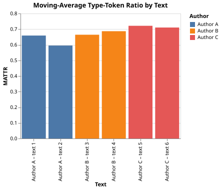

Vocabulary Richness in Historical Texts
The Problem
- Lexical richness — how varied an author's word choices are — is used in authorship studies, language acquisition research, and digital humanities.
- The simplest measure is the type-token ratio (TTR): the number of distinct word types divided by the total number of word tokens.
- TTR has a well-known flaw: it falls as text length increases even when richness is constant, because longer texts inevitably repeat high-frequency words.
- The Moving-Average Type-Token Ratio (MATTR) fixes this by computing TTR over fixed-width windows and averaging the results.
- The approach here:
- Generate a synthetic corpus in which each author samples words from a Zipfian distribution with a different vocabulary size.
- Compute TTR and MATTR for each text using Polars.
- Visualize and compare richness scores across authors with Vega-Altair.
Why does a 1000-word text typically have a lower TTR than a 100-word text from the same author?
- Because longer texts contain fewer unique words.
- Wrong: longer texts contain more unique words in absolute terms; it is the ratio of unique words to total words that falls.
- Because words are reused more often as text length increases, reducing the
- proportion of unique word forms.
- Correct: common words such as "the" and "of" appear multiple times; as total tokens grow, repetitions account for a larger share of the count.
- Because the author's vocabulary is exhausted after 100 words.
- Wrong: the full vocabulary is available throughout; it is reuse frequency that changes the ratio.
- Because tokenisation introduces more errors in longer texts.
- Wrong: TTR is a purely statistical property of the token sequence and is independent of tokenisation quality.
Type-Token Ratio and MATTR
- Given a text of $T$ tokens containing $V$ distinct word types, the TTR is:
$$\text{TTR} = \frac{V}{T}$$
- The MATTR with window width $w$ is:
$$\text{MATTR} = \frac{1}{T - w + 1} \sum_{i=0}^{T-w} \text{TTR}(t_i, t_{i+1}, \ldots, t_{i+w-1})$$
- Each window has the same length $w$, so each window TTR is on the same scale; averaging them gives a length-fair summary.
- When $T \leq w$ there is only one window and MATTR equals the global TTR.
Generating Synthetic Texts
- Word frequencies in natural language follow Zipf's law: the $k$-th most common word appears with frequency proportional to $1/k$.
- Sampling from this distribution with different vocabulary sizes reproduces the richness differences between authors with limited and extensive lexicons.
def make_corpus(
authors=AUTHORS,
vocab_sizes=VOCAB_SIZES,
texts_per_author=TEXTS_PER_AUTHOR,
text_length=TEXT_LENGTH,
zipf_exp=ZIPF_EXP,
seed=SEED,
):
"""Return a Polars DataFrame with columns text_id, author, word.
Each author has a distinct vocabulary size; words are sampled from
a Zipfian frequency distribution (frequency proportional to 1/rank^zipf_exp).
A larger vocabulary size produces more distinct words per token and thus
a higher type-token ratio.
"""
rng = np.random.default_rng(seed)
records = []
text_id = 0
for author, vocab_size in zip(authors, vocab_sizes):
ranks = np.arange(1, vocab_size + 1, dtype=float)
probs = ranks ** (-zipf_exp)
probs /= probs.sum()
word_forms = [f"w{i:04d}" for i in range(vocab_size)]
for _ in range(texts_per_author):
sampled = rng.choice(word_forms, size=text_length, p=probs)
for w in sampled:
records.append({"text_id": text_id, "author": author, "word": w})
text_id += 1
return pl.DataFrame(records)
Computing TTR and MATTR
def type_token_ratio(words):
"""Return unique words / total words (type-token ratio, TTR).
TTR falls as text length increases even when vocabulary richness is
constant, because longer texts inevitably repeat high-frequency words.
Use MATTR for length-fair comparisons across texts of different sizes.
"""
words = list(words)
if not words:
return 0.0
return len(set(words)) / len(words)
def mattr(words, window=MATTR_WINDOW):
"""Return the Moving-Average Type-Token Ratio.
Computes TTR over each consecutive window of width `window`, then
returns the mean of those window TTRs. Because every window has the
same length, the result is length-independent and can fairly compare
texts of different sizes. Falls back to global TTR when the text is
shorter than the window.
"""
words = list(words)
n = len(words)
if n <= window:
return type_token_ratio(words)
window_ttrs = [
type_token_ratio(words[i : i + window]) for i in range(n - window + 1)
]
return float(np.mean(window_ttrs))
Aggregating Richness Scores
def compute_richness(df, window=MATTR_WINDOW):
"""Return a DataFrame with TTR and MATTR for each text.
Input df must have columns text_id, author, word.
Output has columns text_id, author, ttr, mattr.
"""
rows = []
for text_id in df["text_id"].unique().sort():
subset = df.filter(pl.col("text_id") == text_id)
author = subset["author"][0]
words = subset["word"].to_list()
rows.append(
{
"text_id": int(text_id),
"author": author,
"ttr": type_token_ratio(words),
"mattr": mattr(words, window),
}
)
return pl.DataFrame(rows)
Visualizing Results
def plot_richness(richness_df, filename):
"""Save a bar chart of MATTR per text, coloured by author."""
df = richness_df.with_columns(
pl.concat_str(
[
pl.col("author"),
pl.lit(" \u2013 text "),
(pl.col("text_id") + 1).cast(pl.String),
]
).alias("label")
)
chart = (
alt.Chart(df)
.mark_bar()
.encode(
x=alt.X("label:N", title="Text", sort=None),
y=alt.Y("mattr:Q", title="MATTR", scale=alt.Scale(zero=False)),
color=alt.Color("author:N", title="Author"),
)
.properties(
width=320,
height=250,
title="Moving-Average Type-Token Ratio by Text",
)
)
chart.save(filename)

Testing
- TTR edge cases
- A text of all unique words has TTR exactly 1.0.
- A text where the same word is repeated $n$ times has TTR $1/n$.
- An empty word list returns 0.0 without raising an exception.
- MATTR fallback
- When the text is shorter than the window, MATTR returns the global TTR.
- When the text length equals the window width, there is exactly one window and MATTR equals the global TTR.
- Richness ordering
- Author A (vocabulary 200), Author B (400), and Author C (800) are generated from increasingly large Zipfian vocabularies. Their mean MATTR values must increase in the same order.
import pytest
from generate_vocab import make_corpus
from vocab import type_token_ratio, mattr, compute_richness
import polars as pl
def test_ttr_all_unique():
# When every word is distinct the TTR is exactly 1.0.
assert type_token_ratio(["a", "b", "c", "d"]) == pytest.approx(1.0)
def test_ttr_all_same():
# When the same word is repeated n times the TTR is 1/n.
assert type_token_ratio(["x"] * 10) == pytest.approx(0.1)
def test_ttr_empty():
# Empty input returns 0.0 without raising an exception.
assert type_token_ratio([]) == pytest.approx(0.0)
def test_mattr_short_text_equals_ttr():
# When the text is shorter than the window, MATTR falls back to global TTR.
words = ["a", "b", "c"]
assert mattr(words, window=10) == pytest.approx(type_token_ratio(words))
def test_mattr_window_equals_length():
# When text length equals the window width there is exactly one window,
# so MATTR equals TTR exactly.
words = ["a", "b", "c", "a"]
assert mattr(words, window=4) == pytest.approx(type_token_ratio(words))
def test_richness_order_by_vocab_size():
# Mean MATTR must increase with vocabulary size: Author A (200) <
# Author B (400) < Author C (800). The Zipfian generator guarantees
# that a larger vocabulary produces more distinct tokens per window.
df = make_corpus()
richness = compute_richness(df)
means = richness.group_by("author").agg(pl.col("mattr").mean()).sort("author")
mattr_vals = means["mattr"].to_list()
# Authors sort alphabetically: A, B, C -- matching ascending vocab sizes.
assert mattr_vals[0] < mattr_vals[1] < mattr_vals[2]
Vocabulary richness key terms
- Type-token ratio (TTR)
- $V/T$ where $V$ is the number of distinct word types and $T$ is the total token count; decreases with text length even at constant vocabulary richness
- Moving-average TTR (MATTR)
- Mean of window TTRs computed over overlapping fixed-width windows; length-independent because every window has the same size
- Zipf's law
- The empirical regularity that the $k$-th most frequent word in a corpus appears roughly $1/k$ times as often as the most frequent word; produces the characteristic long tail of rare words in natural language
- Vocabulary richness
- A property of a text or author reflecting how varied word choices are; higher richness means proportionally more unique words per token
- Window width (MATTR)
- The fixed number of tokens in each local TTR window; must be short enough to keep window TTR below 1.0 but long enough to average out token-level noise
Exercises
Do the math
A 100-word text contains 60 distinct word types. What is its type-token ratio?
Effect of window width
Compute MATTR for window widths of 10, 25, 50, 100, and 200 for one of the Author C texts. Plot MATTR against window width and explain why MATTR approaches the global TTR as the window grows toward the text length.
TTR length dependence
Generate texts of 100, 200, 400, and 800 tokens from the same Zipfian distribution (vocabulary size 400). Plot both TTR and MATTR against text length on the same axes. At what length does the difference between TTR and MATTR become noticeable?
Real corpus comparison
Download two public-domain texts of very different lengths from Project Gutenberg. Tokenise each into lowercase words (strip punctuation), then compute TTR and MATTR with a 50-word window. Does MATTR correct the length bias visible in TTR?
Hapax legomena rate
A hapax legomenon is a word that appears exactly once in a text.
Implement hapax_rate(words) that returns the fraction of total tokens that are
hapax legomena.
Compare hapax rate with MATTR across the three synthetic authors and discuss
whether hapax rate is also length-independent.